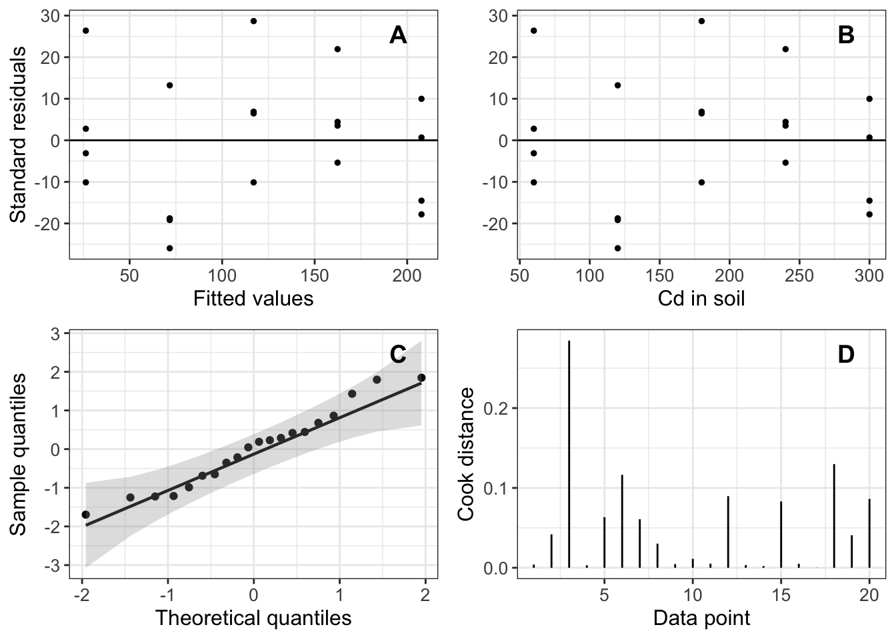

Chapter 7 Correlation and Linear Regression
7.1 Correlation
7.1.1 Correlation coefficient
We addressed correlation with some code and examples provided in the Data Exploration chapter. This section will provide a few more details on correlation estimation and how to explore correlations with non-parametric data.
Correlation is the most basic means of measuring the association between two variables. Pearson’s correlation (r) is used to estimate the level of correlation among two continuous and normally-distributed variables and ranges from -1 to 1. Perhaps too obvious for comment, but values < 0 indicated a negative relationship, values > 0 indicate a positive relationship with 0 indicating no relationship. There is no test of significance per se for the Pearson. However, there are some general guidelines. Generally speaking, r < |0.3| is considered weak, moderate values are |0.3| < r < |0.7|, and an r > |0.7| is considered high correlation. The “|” around the numbers indicate they can take on a negative or positive value.
7.1.2 Non-parametric correlations
Often times data are not normally distributed or continuous. Luckily, a series of other statistics have been developed to measure the relationships among variable with different measurement scales. After Pearson’s correlation coefficient, the next most common approach in ecology and environment is likely the Spearman’s rank correlation. Spearman’s correlates two variables measured on the ordinal scale. The raw data may have actually been measured on an ordinal scale or if data are continuous, but not normally distributed, the researcher may decide to convert the variable to the ordinal scale and assess correlation using a Spearman’s rank correlation. This type of transformation from a non-normal continuous variable to a rank-ordered variable is a common approach in non-parametric statistics (e.g., Wilcoxon, Mann-Whitney U-test) and we encounter it again when dealing with GLMs. An alternative to Spearman’s that you may encounter is Kendall’s tau, which is an alternative test of association between oridinal data. My experience suggests it is less common in the ecology and environment literature.
Categorical data provide a different challenge and associations (i.e., correlations) are commonly assessed using the Pearson Chi-squared test for independence. With this type of data we are testing an explicit hypothesis. The null hypothesis (\(H_0\)): no association between the two variables, is compared against the alternative hypothesis (\(H_A\)): there is an association between the two variables. The Chi-squared test results in a significance test which can reject the null hypothesis. Cramer’s V is an alternative to the Chi-squared test. Cramer’s V does not reject or fail to reject a hypothesis and is more similar to the Pearson’s correlation coefficient in its interpretation producing a value between 0 (no association) and 1 (perfect association). Guidelines suggest that a Cramer’s V of < 0.25 indicates a week association and > 0.75 is a moderate association.
All the above approaches assume that individual observations are drawn randomly from the population.
7.2 Regression
The simplest linear models we can develop are linear regression models. These models are similar to the concept of correlation introduced in the previous section in that we are only examining two variables. However, linear regression differs from correlation in several important ways. Conceptually, the biggest difference, is that in a linear regression you are proposing a directional relationship. When we looked at correlations, we were simply interested in whether there was a relationship between two variables, but we did not propose a cause and effect relationship. In other words, in correlation, it does not matter what variable is on the \(y\) axis and what variable was on the \(x\) axis. The variables are interchangeable between axes. This is not true of a linear regression. For a linear regression, we must specify which of the variables we are trying to predict (i.e., which variable is the dependent variable. This variable is the \(y\) variable. The predictor (i.e., independent variable) is the \(x\) variable. Our selection of dependent \(y\) and independent \(x\) variables is informed by our question and the hypotheses that we want to test. Essentially, the \(y\) is what you want to predict - your response variable of interest - and your \(x\) is something that influences that response. We will go through many examples throughout the book.
These models form the basis for all subsequent and more sophisticated modelling that we will explore in this book. Essentially, a simple linear regression models a linear (i.e., straight line) relationship between a response variable \(y\) with a normal distribution and a single, numerical, explanatory variable. We introduced the linear model in the past chapter. A simple linear regression is even… well… simpler and can be represented by the following equation.
\[y_i = \beta_0 + \beta_1x_1 + \epsilon_i\]
Another common way of representing this equation involves presenting more detail about the shape of the response variable. In this case, we specify the response variable has a normal distribution (\(Y\) ~ Normal(\(\mu_Y, \sigma^2_Y\))) and therefore our model is written as:
\[\mu_Y = \beta_0 + \beta_1x_1 + \epsilon_i\]
The \(\beta_0\) and \(\beta_1x_1\) have the same interpretation. As a reminder, \(\beta_0\) is the intercept (i.e., where the line crosses the \(y\) axis). Or, in other words, \(\beta_0\) is the predicted value of \(\mu_y\) when \(x\) = 0. The slope of the straight line is \(\beta_1\). I once had a highly respected and intelligent professor tell me that, in ecology, “it is all about the Betas”. This slope can be presented as the rate of change in \(\mu_Y\) per unit change in the explanatory variable \(x_1\).
Throughout the book, I have tried to use ‘real’ ecological data collected by me and my colleagues. I think this is important because the data are messy and frequently do not behave well. These data can have challenging distributions that can make fitting models to the data difficult. Sometimes wrangling ‘real’ world ecological data and fitting models to those data is as frustrating and challenging as stuffing a tired and angry toddler into a snow suit… in a hot room… while sleep deprived… with your mother-in-law explaining how you are going to be late while she muses that she never had such problems with her kids. But, working with those data will help you with your own data. However, while digging through all the many datasets I have compiled across my career, it turns out I have never collected data that could be modeled using a simple linear regression. Lucky me. So the following data and examples are from the excellent textbook by Pablo Inchausti, Statistical Modeling with R, which is currently available through the UW library for this course. The author’s website with data, code, and extra material can be found here.
The data we will work with look at plant tolerance and cadmium levels. Cadmium (Cd) is a metal that has toxic effects on plant and human health. The researchers grew grass in soils with different concentrations of Cd to determine if the grass was a bioaccumulator of the metal to assess its usefulness in bioremediation. More details can be found in the textbook.
First, we will make sure the packages required are loaded. Remember, you must make sure they are installed.
packages.needed <- c("ggplot2", "broom", "qqplotr", "cowplot", "ggeffects")
lapply(packages.needed, FUN = require, character.only = TRUE)Next we load the data provided by Inchausti. The data can be downloaded from the author’s website (referenced above) or the UW LEARN site.
## soil shoot root
## Min. : 60 Min. : 16.2 Min. : 105
## 1st Qu.:120 1st Qu.: 52.6 1st Qu.: 245
## Median :180 Median :123.7 Median : 465
## Mean :180 Mean :117.0 Mean : 503
## 3rd Qu.:240 3rd Qu.:171.2 3rd Qu.: 665
## Max. :300 Max. :217.7 Max. :1067The soil variable represents the level of Cd in the soil and the shoot variable represents the amount of Cd in the shoots.
The model we want to fit is: \[shoot = \beta_0 + \beta_1soil + \epsilon_1\]
The \(\epsilon\) represents the residuals and there are explicit assumptions about its distribution also. In this case we assume the residuals will follow a normal distribution with a mean = 0.
Fitting a simple linear regression in R uses the lm function which is part of the stats package. You do not need to load this package because it is automatically loaded by default at the start of every R session. We fit the linear model to our data using the following:
The code above fits the model we specified in the equation above. The shoot response variable and soil predictor covariate are present in the code. However, we do not need to specify any of the model-estimated components such as the intercept \(\beta_0\) the slope of the relationship \(\beta_1\) or the error term \(\epsilon_1\) because these are unknown to us and are produced by the model estimating function lm. The tilde sign ~ in R fills the place of the = in the equation and separates the response and predictor variables. We also must specify the data frame which contains the variables with the data = df code. We store the results by assigning the model to an object (m1 in the example above) which creates a list containing model results. The most relevant model results are provided using the summary command.
##
## Call:
## lm(formula = shoot ~ soil, data = df)
##
## Residuals:
## Min 1Q Median 3Q Max
## -25.97 -11.22 1.73 7.66 28.68
##
## Coefficients:
## Estimate Std. Error t value Pr(>|t|)
## (Intercept) -19.030 8.355 -2.28 0.035 *
## soil 0.756 0.042 18.00 5.9e-13 ***
## ---
## Signif. codes: 0 '***' 0.001 '**' 0.01 '*' 0.05 '.' 0.1 ' ' 1
##
## Residual standard error: 15.9 on 18 degrees of freedom
## Multiple R-squared: 0.947, Adjusted R-squared: 0.944
## F-statistic: 324 on 1 and 18 DF, p-value: 5.88e-137.2.1 Interpreting Output
The most important model estimates are presented under the Coefficients heading (remember “It’s all about the Betas”). The summary output presents estimates of the intercept (\(\beta_0\)), the slope (\(\beta_1soil\)), and the standard errors associated with each estimate (i.e., the variation around the estimate). The Coefficients section also presents the t value and the p-value (Pr(>|t|)).
Recall from lecture, that within this frequentist paradigm all of these parameters are estimated using a maximum likelihood approach.
The p-value is calculated based on the t-distribution which is a type of normal distribution, centered on zero, in which the variance is estimated based on the degrees of freedom. The degrees of freedom are related to your sample size. Increasing the sample size decreases the variance, essentially narrowing your normal distribution. The p-value presented in the output represents the probability of obtaining a t-value equal to or more extreme than the one obtained if the null hypothesis is true (i.e. \(\beta_1\) = 0). Therefore, the p-value essentially measures the lack of congruence between the data and the null hypothesis. In a frequentist context, the p-value essentially answers the question of how frequently we would observe the data if we ran this experiment many times. Data that deviate from the null hypothesis, based on model assumptions, have lower p-values. We will work through a simulation exercise in class that will hopefully be illuminative. In order to determine whether the results are actually important we must interpret the magnitude of the estimated slope and its error in the context of the ecology and research questions that motivated the data collection. In the example above, that means we need to decide if the absorption of 75.5% of the soil Cd by plants is important. The estimated intercept \(\beta_0\) of -19.03 is largely meaningless in the context of this model because it estimates the average shoot concentration when there is no Cd in the soil (i.e. Cd = 0). Later we will discuss the possibility of standardizing your predictor variables and how that affects our interpretation of the intercept in linear models.
The bottom of the output presents several measures of the model performance. Each model can be used to generate predicted values (i.e., the value of the response variable if the model is true). The Residual standar error essentially represents difference between observed and predicted values (i.e, the estimated variance of the residuals or unexplained variance in the model). The Multiple R-squared and the Adjusted R-squared values are the proportion of variation in the response variable that is explained by the model. You can find plenty of mathematical descriptions of the difference between these two metrics online, if you are interested. The main difference is that Multiple R-squared will stay the same or increase as you add new predictors (i.e., covariates) to the model. This is true even if the new predictors are uninformative. Whereas Adjusted R-squared only increases if the new predictors improve the models predictive power and will decrease if the predictors are irrelevant to the models predictive performance. These values are both a measure of the goodness of fit of the model to the data. Higher values represent a better fit to the data, but should largely only be considered in a comparative context (i.e., in relation to other models fitted to the same data).
The Residuals: section at the top of the model output is largely irrelevant to model interpretation.
Statistics is so relevant to the real world because it allows us to estimate the inherent uncertainty underlying any complex problem. The Std. Error component give us some indication of the variability around the estimated parameter, but it is typically considered a fairly narrow or overly optimistic estimate of our confidence in the estimate. Therefore, it is common to estimate the confidence interval surrounding the parameter estimate. The interpretation of a confidence interval in a frequentist context is different than in a Bayesian context. In a frequentist context, the confidence interval is a range of equally plausible values of the parameter that we could obtain if we repeated this study many times with the same sample size and the same population. As an aside, in a Bayesian context we would estimate a 95% credible interval which would be accurately interpreted as: there is a 95% chance the true value is within the range presented. This is different.
To obtain the confidence interval for the model m1 we use the confint( ) function.
## 2.5 % 97.5 %
## (Intercept) -36.584 -1.476
## soil 0.668 0.844So, what is the best way to interpret confidence intervals in the frequentist context? Consider it as a thought experiment. If we ran this study over and over again in the same population with the same sample size, we would end up with a distribution of parameter estimates with a lower 2.5% bound of 0.668 and an upper 97.5% bound of 0.844. Hopefully the example in class helps to further clarify this concept.
7.3 Model Validation
It is not enough to fit a model and simply present the parameter estimates. We also need to determine if it is a ‘good’ model. In other words, does the model fit the data well? The residuals and their distribution are the main focus of model validation. Essentially, the smaller the residuals (i.e., the difference between the observed and predicted values) the better the model fits the data. In addition to the basics of minimizing \(Y_{obs} - Y_{pred}\) we also want simple and random patterns in the distribution of our residuals. Any trends in the residuals can be an indication of poor model fit. With a general linear model, the default model validation summary produces four graphs. You can produce these in base R with the plot(model_name) function. However, for greater flexibility and insight we will produce validation figures using ggplot. This approach is also used throughout most of the examples in Inchausti’s textbook.
The first graph plots the Residuals vs. the Fitted values. The residuals are estimated for each of the observed values and are presented in the y-axis. Remember the residuals are estimated as \(Y_{obs} - Y_{pred}\) and can therefore take on positive and negative values that should be distributed randomly around 0. The fitted values represent the model predicted values,encompass the range of your observed data, and are plotted on the x-axis. If the model fits the data well, we should see an even distribution of points scattered on both sides of the 0 value. There should be no visible pattern to the distributed values (i.e., cone shaped). This implies a homogeneous distribution of the residuals, which is an informal assessment of homoscedacity (i.e., homogeneity of variance).
A parallel plot to the Residuals vs. Fitted values, replaces the x-axis fitted values with the actual observed values and should have a similar pattern.
The third common plot presents the sample quantiles on the y-axis and the theoretical quantiles on the x-axis. Since this plot presents the two quantiles and is used to assess the ‘normality’ of the data, it is often refereed to as the “Normal Q-Q plot”. Quantiles are points in your data below which a certain proportion of your data fall. In a normal distribution with a mean of 0, the 0.5 quantile (i.e., 50th percentile) is 0. The quantiles presented are basically your data sorted in ascending order with each data point labelled as the point below which a certain proportion of the data fall. Therefore, if the model predicted (Theoretical quantiles) match the observed (Sample quantiles) perfectly, they will lie along a perfect diagonal. Thus,if the residuals are normally distributed, they should have a relatively tight scatter of points along the line of perfect fit. It is very common for the points near the tail ends of the distribution (upper and lower) to deviate more from the theoretical perfect fit than the points closer to the center for the distribution. This makes sense because there are more data to inform model fit in the central regions of the distribution than near the tails.
The final common model validation plot presents Cook’s distance. This is essentially a sensitivity analysis that quantifies the impact of each data point on the parameter estimates. Data points with a “large” Cook’s distance may have an unduly large influence on the parameter estimates. There is no hard-and-fast rule to decide when a Cook’s distance is “too” large. Like much of model validation, it is somewhat subjective and relies on our visual interpretation of the validation plots. If you are concerned about the influence of a particular observation, you can remove that observation, re-run the model and look at the changes in the model parameter estimates. The Cook’s distance plot presents the observations in your data set in order along the x-axis so it is easy to identify potentially large observations. The y-axis presents the Cook’s distance. If you are interested, I will leave you to look up the actual calculation of Cook’s distance on your own. It is not necessary to understand the underlying mathematics in detail. It is enough to know what it represents and how it can inform your modelling choices and interpretation.
Producing ggplot-type figures requires use of the package broom. First, we create a tibble.
## # A tibble: 2 × 7
## term estimate std.error statistic p.value conf.low conf.high
## <chr> <dbl> <dbl> <dbl> <dbl> <dbl> <dbl>
## 1 (Intercept) -19.0 8.36 -2.28 3.52e- 2 -36.6 -1.48
## 2 soil 0.756 0.0420 18.0 5.88e-13 0.668 0.844The glance function gathers the model fit data into a more user-friendly format.
## # A tibble: 1 × 12
## r.squared adj.r.squared sigma statistic p.value df logLik AIC BIC
## <dbl> <dbl> <dbl> <dbl> <dbl> <dbl> <dbl> <dbl> <dbl>
## 1 0.947 0.944 15.9 324. 5.88e-13 1 -82.7 171. 174.
## # ℹ 3 more variables: deviance <dbl>, df.residual <int>, nobs <int>Then we create a data frame containing all the information required to produce the four plots. Most importantly, this data frame includes the empirical data, the model fitted values, Cook’s distance, residuals. You can follow the ggplot code below to see what variables are used to create each plot. The code provided comes directly from Inchausti Ch.4 with some slight modifications.
The augment function accepts a model object and adds information about each observation in the dataset. These are the values we will plot.
## # A tibble: 20 × 8
## shoot soil .fitted .resid .hat .sigma .cooksd .std.resid
## <dbl> <int> <dbl> <dbl> <dbl> <dbl> <dbl> <dbl>
## 1 23.2 60 26.3 -3.12 0.150 16.4 0.00398 -0.212
## 2 16.2 60 26.3 -10.1 0.15 16.2 0.0419 -0.689
## 3 52.7 60 26.3 26.4 0.15 14.9 0.285 1.80
## 4 29.1 60 26.3 2.78 0.15 16.4 0.00316 0.189
## 5 52.5 120 71.7 -19.2 0.075 15.7 0.0634 -1.25
## 6 45.7 120 71.7 -26.0 0.075 15.0 0.116 -1.69
## 7 52.9 120 71.7 -18.8 0.075 15.7 0.0608 -1.22
...Notice the table includes one row for each of the observations (only display 7 above). The next step is to store the results of augment(m1) in order to create the plots.
# ggplots of the residual analysis of of Frequentist simple regression
m1.res=ggplot(data=res.m1, aes(x=.fitted, y=.resid)) +
geom_point(size=1) +
theme_bw() +
geom_hline(yintercept = 0) +
labs(x="Fitted values", y="Standard residuals") +
theme(axis.title=element_text(size=12),
axis.text = element_text(size=10))
m1.res.vs.expl=ggplot(data=res.m1, aes(x=soil, y=.resid)) +
geom_point(size=1) +
theme_bw() +
geom_hline(yintercept = 0) +
labs(x="Cd in soil", y="stnd residuals") +
theme(axis.title.x=element_text(size=12),
axis.title.y = element_blank(),
axis.text = element_text(size=10))
m1.Cook=ggplot(data=res.m1, aes(x=1:nrow(res.m1),y=.cooksd)) +
geom_linerange(aes(ymin=0, ymax=.cooksd)) +
theme_bw() +
labs(x="Data point", y="Cook distance")+
theme(axis.title=element_text(size=12), axis.text = element_text(size=10))
m1.qq=ggplot(res.m1, mapping=aes(sample = .std.resid)) +
stat_qq_point() +
theme_bw() +
stat_qq_line() +
stat_qq_band(alpha=0.3) +
labs(x = "Theoretical quantiles", y = "Sample quantiles") +
theme(axis.title=element_text(size=12),
axis.text = element_text(size=10))
plot_grid(m1.res, m1.res.vs.expl, m1.qq, m1.Cook, ncol=2,labels = LETTERS[1:4],
align="hv",label_x=0.85, label_y=0.95) # Fig 4.5 in Inchausti